Inhalt Index DeskTop Bronstein

 Algebra und Diskrete Mathematik Klassische algebraische Strukturen Vektorräume Lineare Operatoren in Vektorräumen
Algebra und Diskrete Mathematik Klassische algebraische Strukturen Vektorräume Lineare Operatoren in Vektorräumen


Es seien V und W zwei Vektorräume. Jede eindeutige Abbildung a von V in W heißt lineare Abbildung, lineare Transformation oder linearer Operator (s. auch Lineare Operatoren und Funktionale) von V in W genau dann, wenn gilt:
| 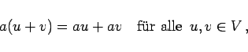 | (5.231) |
| 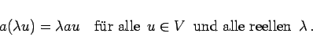 | (5.232) |
| Beispiel A |
|
Die Abbildung 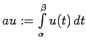 des Raumes der stetigen Funktionen 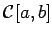 in den der reellen Zahlen ist linear. |
Lineare Abbildungen 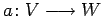, bei denen wie in diesem Beispiel 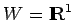 gilt, werden lineare Funktionale genannt.
| Beispiel B |
|
Die Abbildung a des Raumes 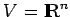 in den Vektorraum W der Polynome höchstens (n-1)-ten Grades ist linear: 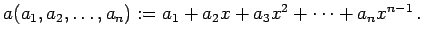 |
Jedem n-dimensionalen Vektor wird ein Polynom vom Grade  zugeordnet.
zugeordnet.
| Beispiel C |
|
Ist und 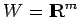, dann sind alle linearen Operatoren 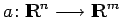 durch reelle Matrizen 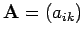 vom Typ (m,n) gegeben. Die Gleichung 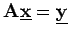 entspricht dem linearen Gleichungssystem (4.104a) 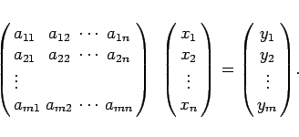
|